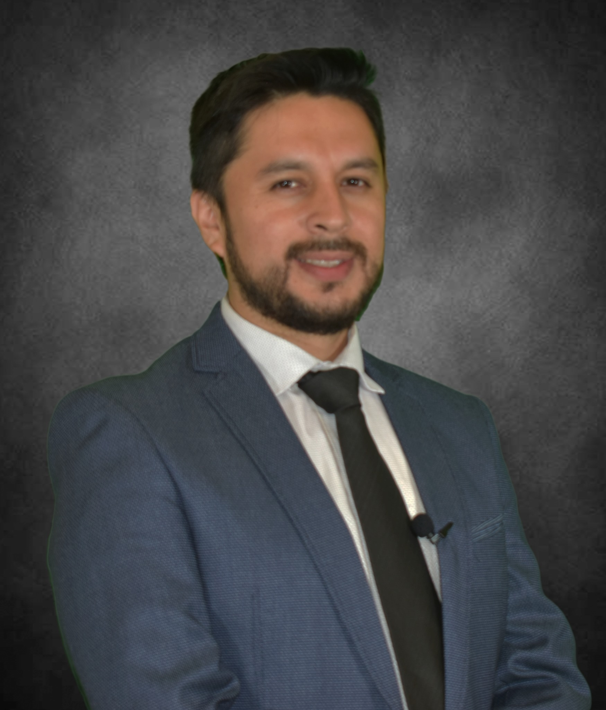
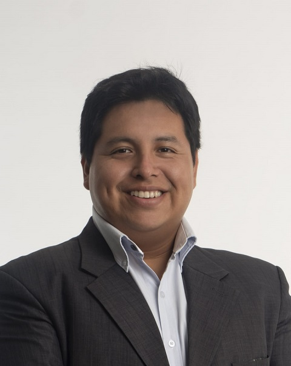
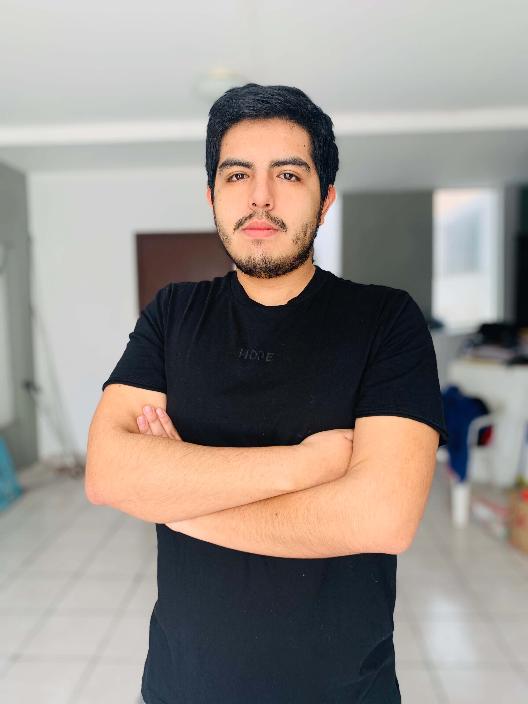
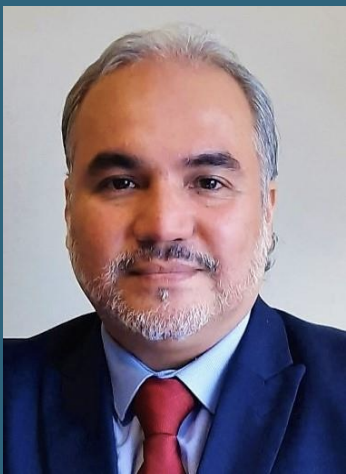
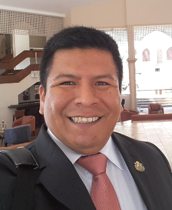
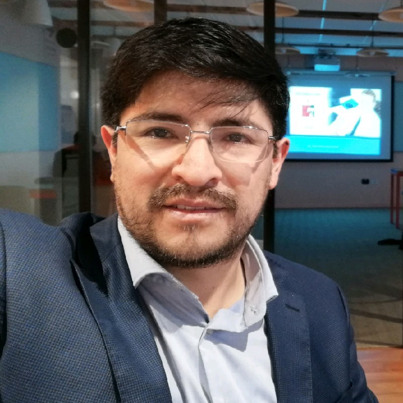

Consejo directivo
En el mes de marzo de 2023, HL7 International autorizó la creación de esta apasionante asociación. Diez miembros directivos visionarios se unieron para formar el poderoso Consejo Directivo, encargado de liderar esta institución durante un emocionante período de 4 años.
HL7 Perú está listo para revolucionar el campo de la salud y establecer nuevos estándares en el ámbito nacional e internacional.
Directorio

Styp Bill Roy Canto Rondón

Presidente
- Consultor en proyectos de innovación en salud digital
- Ingeniero de Telecomunicaciones de profesión, con más de 12 años de experiencia, 8 de ellos en el campo de la salud digital, vasta especialización en el área de la Telemedicina; elaboración e implementación de proyectos relacionados a desarrollo de software e instalación de equipos informáticos, electrónicos y biomédicos.
- Impulsor de tecnologías relacionadas a Transformación Digital, eHealth, Interoperabilidad, Cloud Computing, Big Data, Inteligencia de Datos, Inteligencia Artificial, Telemedicina, Desarrollo Web Front-end, Back-end, web services SOAP-REST, gestores de contenido, Redes de Telecomunicaciones, Comunicaciones Móviles, Seguridad de la Información, Gestión de Proyectos y Proyectos en Inversión Pública.
- Miembro del Comité Especializado de Tecnologías para la Salud del Capítulo de Ingeniería Electrónica del CD Lima-CIP.
- Vocal de la Organización Internacional de Telemedicina y Telesalud.
- Cursos y pasantías relacionados a temas de especialización en Telemedicina en distintos países tales como Corea del Sur, Colombia, México, Brasil y Reino Unido.
Pilar Rossana Rivas Tarazona
Vice Presidente
- MSc Gestión, Dirección, Organización y Estrategia-Univ.Jean-Moulin-Lyon-III, FRANCIA; estudios doctorales completos en Innovación en Salud-Ecole des Mines de Paris, FRANCIA; Diploma de Especialización en Ciencias de la Salud-Université Catholique de Louvain-BÉLGICA; 15 años en Ing. Biomédica, Ing. Clínica, Evaluación de Tecnología y Salud Digital con uso de dispositivos médicos. Profesor e Investigador.
- Consultante en World Health Organization-WHO Collaborating Center for HTM, UVM, USA. Consultor Internacional en Ing. Biomédica, Ing. Clínica, Evaluación de Tecnología y Salud Digital con uso de dispositivos médicos.
- Elected Board de Clinical Engineering Division y Health Technology Assessment Division de International Federation of Medical & Biological Engineering-IFMBE, USA; Board de Health Technology Assessment for the Americas-RedETSA, Panamerican Health Organization-PAHO,USA; Member: American College of Clinical Engineering-ACCE, USA.
- Miembro del Comité Especializado de Tecnologías para la Salud; Capítulo de Ing. Electrónica del CD Lima-CIP, PERÚ.

Gabriel Augusto Castro Ormeño
Secretario
- Médico-Cirujano y Administrador de Empresas(e).
- Egresado de las maestrías de Docencia e Investigación en Salud y Medicina Ocupacional y Medio Ambiente.
- Posee Diplomados en Calidad en Salud, Salud Ocupacional y Auditoría de Servicios de Salud.
- Estudios en gestión ágil de proyectos y ciencias de datos.
- Docente en la Carrera de Medicina Humana en la Universidad Científica del Sur (UCSUR).
- Médico en el Centro Nacional de Salud Ocupacional y Protección del Ambiente para la Salud (CENSOPAS) en el Instituto Nacional de Salud del Peru (INS-PERÚ).
- Fue Presidente del Comité de Tecnologías de la Información y Comunicación en Salud (TICS) del Colegio Médico del Perú (CMP) Consejo Regional III- Lima.
- Miembro Fundador de la Asociación de Calidad en Salud del Perú (ASOCALP).
- Miembro experto invitado a la Comisión de Gestión de Tecnología para la Salud del Colegio de Ingenieros del Perú (CIP), Consejo Departamental Lima.

José Sebastián Ibarra Arregui
Tesorero
- Egresado de Ingeniería Biomédica en la Pontificia Universidad Católica del Perú (PUCP) y Universidad Peruana Cayetano Heredia (UPCH).
- Trainee Technical en el área de Educación y Aplicaciones Clínicas en Siemens Healthineers Perú.
- Investigador y tesista asociado dentro del Grupo de Telecomunicaciones Rurales - GTR PUCP. Investigación en temas de Telesalud y Telemedicina Rural.
- Tesorero de la Asociación HL7 Perú, miembro fundador.
- Miembro fundador de la Rama Estudiantil IEEE UPCH en 2019.
- Miembro fundador de la Asociación de Estudiantes de Ingeniería Biomédica en 2020 como vicepresidente.
Cynthia Téllez Gutiérrez
Vocal
- Consultora legal en materia de Protección de Datos Personales, Derecho e Internet.
- Experto Certificado en Protección de Datos por el Institute of Audit & IT-Governance.
- Abogada por la Universidad Nacional Mayor de San Marcos.
- Master en Seguridad Jurídica y Seguridad Informática en Sociedades Digitalizadas en la Universidad Lille 2 Francia.
- Egresada de la Maestría en Gestión Tecnológica de la Información de la Universidad Peruana de Ciencias Informáticas.
- Fue Docente universitaria en la UNMSM, en la Escuela de Postgrado de la Universidad de Lima y otros. Coordinadora de la iniciativa DateaSeguro en Perú.
- Estudios de maestría en Derecho de los negocios en Universidad Toulouse 1 Francia. Pasantía en Estudio de Abogados Écija (Madrid-España).
- Premio Accésit 2014 de la XVIII Edición de los Premios de Protección de Datos Personales de la Agencia Española de Protección de Datos Personales con texto de investigación grupal.
- Ponente en distintos eventos en materia de protección de datos personales y derecho.
- Consultora contratada para redacción del ante proyecto del Reglamento de la Ley Marco de Telesalud.
- Asesora legal externa invitada por el Ministerio de Justicia para la elaboración de la Ley de Protección de Datos Personales.
- Fue Jefa de la División de Protección de Datos Personales y Acceso a la Información en Iriarte & Asociados.
- Fue Miembro del Área de Proyectos de Derecho Civil y Procesal Civil en la Editora Jurídica Grijley.
Miguel Sebastián Egoavil Ayala
Vocal
- Médico-Cirujano y egresado de la Maestría en Informática Biomédica en Salud Global, ambos por la Universidad Peruana Cayetano Heredia.
- Más de 10 años de experiencia en la implementación de proyectos de Salud Digital (Telesalud, Interoperabilidad, Inteligencia Artificial, entre otros), tanto a nivel de academia (proyectos de investigación), como en el sector privado.
- Estudios de diplomaturas de posgrado en en Big Data y Machine Learning (UTEC), Sistemas de Información en Salud (Universidad de Chile) y Gerencia de Proyectos (Universidad ESAN).
- En el sector privado, Director Médico de Medical Innovation & Technology, implementa proyectos de Telesalud para zonas rurales en el marco de la responsabiidad social empresarial, y actualmente soy Gerente de Telemedicina de Bupa Global Latinoamérica.

Javier Alejandro Santisteban Romero
Vocal
- Profesional de Ingenieria de Sistemas con especialización en Gerencia de Proyectos e Inteligencia de Negocios.
- Veinte años de experiencia en gestión pública en el sector salud a nivel de gobierno nacional; con sólidos conocimientos en planeamiento estratégico, gestión de procesos y proyectos de desarrollo social y económico, orientados a generar valor público.
- Con amplia experiencia en formulación e implementación de normativas, diseño y gestion de plataformas de atención y servicios al usuario, planes de fortalecimiento, gestión de información y transformación digital.
- Definidos valores humanos y capaz de trabajar en equipo y de forma independiente, según las necesidades de la Organización; conferencista y con publicaciones sobre temas de desarrollo social en Perú.

Marcelino Esteban Andía Ticona
Vocal
- Cirujano Dentista, Magister en Administración, Doctor en Educación
- Diploma de Especialización en Gobernanza y Gestión Digital
- Diplomado en business Process Management con Bizagi
- Diplomado en Gestión de Tecnologías en Salud
- Certificado Scrum Foundations, Scrum Master
- Integrante de Equipo Técnico de la Oficina de Innovación y Desarrollo de la Oficina General de Tecnologías de la Información del Ministerio de Salud de Perú
- Especialista integrante del Comité Técnico de Normalización 129 Informática en salud para el Instituto Nacional de Calidad –INACAL
- Catedrático Universitario Pre y Posgrado UNMSM, UPSJB

Jose Luis Huaman Villar
Vocal
- Ingeniero de Sistemas con más de 20 años de experiencia en gestión de tecnologías de la información, gobierno y transformación digital, arquitectura empresarial, arquitectura orientada a servicios, gestión de proyectos, gestión por procesos, ciberseguridad. seguridad de la información, tecnologías en computación en la nube, tecnologías disruptivas con blockchain, tecnologías con hiperconvergencia computacional.
- Implementador de plataformas sectoriales de interoperabilidad tales como la Plataforma de Interoperabilidad en Salud - PIDSALUD (que soporte estandares semánticos y sintácticos internacionales), Plataforma para el Repositorio de Historia Clínica Electrónica - RENHICE, Plataforma para firma digital y electrónica, Plataforma para el Registro de Afiliados al Aseguramiento Universal en Salud - RAUS, Plataforma para el Modelo de Acreditación en Salud, entre otros; utilizando entornos tanto OnPremise como Cloud Pública y Privada; de la misma manera del uso de estándares de interoperabilidad tales como X12N, HL7, HL7 FHIR.
- Vocal del Capítulo HL7 Perú, Equipo capacitador del Capítulo DAMA Perú.

Jhon Henry García Ruiz
Vocal
- Consultor y empresario con más de 12 años de experiencia dentro del sector privado y público. Especialista en Salud Digital ( Historia Clínica Electrónica / TeleSalud / Interoperabilidad - HL7); de profesión Ingeniero de Sistemas y Computación con Maestría en Administración de Empresas - UTP y Egreso de la Maestría de Ingeniería de Software - UNMSM.
- Director ejecutivo y general (2016-2019) de Telesalud y tecnologías de la información. Contribuí con la elaboración del marco normativo base para los procesos vinculados al Registro Nacional de Historias Clínicas Electrónicas y a la Telesalud ( Decretos Legislativos N° 1306 - y N° 1303 - respectivamente ) e interoperabilidad, entre otros.
- Colaboro con organizaciones sin fines de lucro como el Consejo Departamental de Lima del Colegio de Ingenieros del Perú - como Miembro Experto - Comisión de Tecnologías para la Salud. Soy Vocal de la Asociación HL7 Perú y Asociado de la Asociación Peruana de Software Libre APESOL.